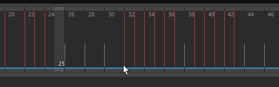
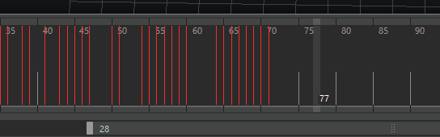

重要信息
- 将包含多个动画曲线的关键帧剪切和粘贴到多个属性时，请注意关键帧的选择顺序，因为该顺序将影响粘贴的顺序。
- 从“曲线图编辑器”(Graph Editor)或“摄影表”(Dope Sheet)中的多个属性复制关键帧时，应从各编辑器的大纲视图中选择属性，而不应从视图区域进行选择。
复制并粘贴关键帧之前，请选择“关键帧 > 复制”(Key > Copy) >  以设置所需的复制关键帧选项(Copy Keys Options)。若要设置“粘贴关键帧”(Paste Keys)选项，请选择“关键帧 > 粘贴”(Key > Paste) >
以设置所需的复制关键帧选项(Copy Keys Options)。若要设置“粘贴关键帧”(Paste Keys)选项，请选择“关键帧 > 粘贴”(Key > Paste) >  。
。
在粘贴关键帧选项(Paste Key Options)窗口中，执行以下操作之一：
- 单击“粘贴关键帧”(Paste Keys)以设置“粘贴关键帧”(Paste Keys)选项并粘贴当前剪切或复制的关键帧。“粘贴关键帧选项”(Paste Keys Options)窗口将关闭。
- 单击“应用”(Apply)以设置“粘贴关键帧”(Paste Keys)选项并粘贴当前剪切或复制的关键帧。“粘贴关键帧选项”(Paste Keys Options)窗口保持打开状态。
- 单击“关闭”(Close)以放弃对“粘贴关键帧”(Paste Keys)选项所做的任何更改并关闭“粘贴关键帧选项”(Paste Keys Options)窗口。
复制并粘贴单个关键帧

在“时间滑块”(Time Slider)上复制并粘贴单个关键帧
- 按住 Shift 键并在“时间滑块”(Time Slider)中选择关键帧。
“当前时间指示器”(Current Time Indicator)将移动到单击的位置，相应的关键帧将以蓝色亮显。
- 执行下列操作之一：
- 按住 Ctrl 键并使用鼠标右键将选定关键帧拖动到“时间滑块”(Time Slider)上的新位置。
- 单击鼠标右键，然后从显示的菜单中选择“复制”(Copy)。
- 选择。
- 在“时间滑块”(Time Slider)中单击。
“当前时间指示器”(Current Time Indicator)将移动到单击的位置。
- 执行下列操作之一：
- 单击鼠标右键并从显示的菜单中选择。
- 从“关键帧”(Key)菜单中选择。
- 按住 Shift+S 键的同时单击并从显示的标记菜单中选择“粘贴关键帧”(Paste Keys)。
复制并粘贴多个关键帧

在“时间滑块”(Time Slider)上复制关键帧
- 按住 Shift 键并在“时间滑块”(Time Slider)中的关键帧范围上拖动。
该范围内的关键帧现已选中并以蓝色亮显。
- 执行下列操作之一：
- 按住 Ctrl 键并将选定关键帧拖动到“时间滑块”(Time Slider)上的新位置。
- 单击鼠标右键，然后从显示的菜单中选择“复制”(Copy)。
- 选择。
- 按住 Shift 键并在“时间滑块”(Time Slider)中您希望粘贴的关键帧添加到、替换或与其合并的关键帧范围上拖动。
时间范围现已选中并以蓝色亮显。
- 执行下列操作之一：
- 按住 Ctrl 键的同时将其拖动到“时间滑块”(Time Slider)上的新位置。
- 单击鼠标右键并从显示的菜单中选择。
- 从“关键帧”(Key)菜单中选择。
- 按住 Shift+S 键的同时单击并从显示的标记菜单中选择“粘贴关键帧”(Paste Keys)。